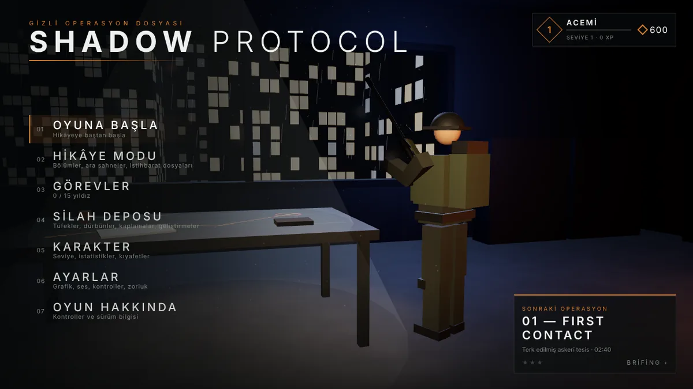

Shadow Protocol
Hikâyeli 3D sniper oyunu: 5 görev, gerçekçi balistik ve silah geliştirme sistemi.
Demo: Görev 01 – First Contact.
Tarayıcıda açılır; masaüstünde klavye ve fare önerilir.

Genel bakış
Shadow Protocol, Birim 9'dan bir keskin nişancının şifreli bir mesajla başlayan hikâyesini anlatan birinci şahıs bir sniper oyunu. Her görev, öncesi ve sonrası ara sahneleriyle hikâyeyi ilerletiyor.
Proje başlangıçta Unity 6 hedefiyle planlandı; mevcut oynanabilir sürüm tarayıcıda çalışan bir Three.js uygulaması.
Öne çıkan özellikler
- Ara sahneli 5 görev: First Contact, Dark City, Cold Silence, The Betrayal, Last Signal
- Balistik: mermi düşüşü, rüzgâr, nefes tutma, termal dürbün, fark edilme göstergesi ve yavaş çekim son atış kamerası
- 5 tüfek, 5 dürbün, 8 kamuflaj, geliştirme ağaçları ve 7 kıyafet
- Seviye ve rütbe sistemi, kayıt ve ayarlar
- 3D ana menü, silah ve karakter vitrini, istihbarat dosyalı hikâye modu
- Tamamen sentezlenmiş müzik, ortam ve silah sesleri
- Tam klavye desteği ve dokunmatik kontroller
- Oyunun kendi sahnesinden üretilmiş dikey tanıtım videosu
Sıradaki adımlar
- Daha ayrıntılı modeller
- Android paketi